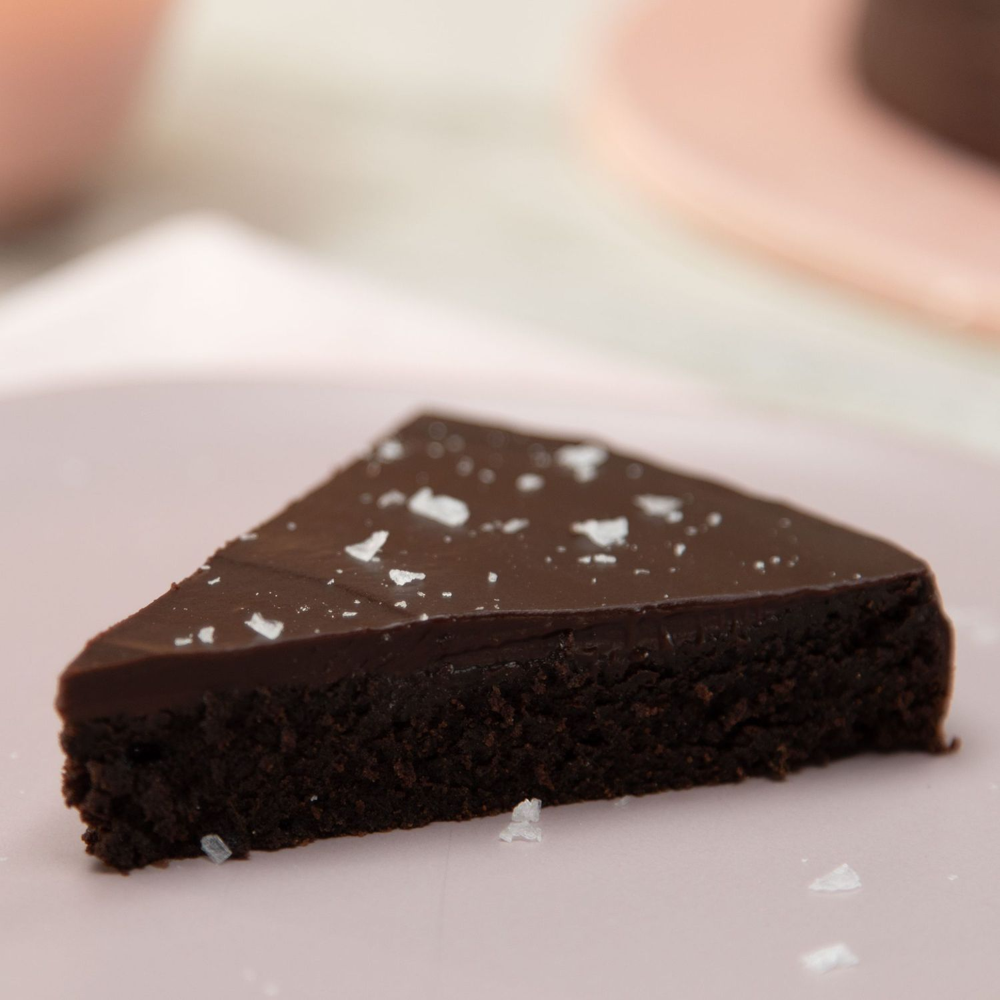

Flourless Chocolate Cake

Description
Perfect for chocolate lovers and people who can't have gluten! Great for entertaining, deceptively easy to make. I flour the pan using cocoa powder so it won't leave white marks on the cake and keeps it totally gluten free. Serve warm — either topped with whipped cream or dusted with powdered sugar — alongside a scoop of ice cream. For a chocolate ganache topping, see footnotes!
Ingredients
- 4 (1 ounce) squares semisweet chocolate, chopped
- ½ cup butter
- ¾ cup white sugar
- ½ cup cocoa powder
- 3 large eggs, beaten
- 1 teaspoon vanilla extract
Directions
- Preheat oven to 300 degrees F (150 degrees C). Grease an 8-inch round cake pan, and dust with cocoa powder.
- In the top of a double boiler over lightly simmering water, melt chocolate and butter. Remove from heat, and stir in sugar, cocoa powder, eggs, and vanilla. Pour into prepared pan.
- Bake in preheated oven for 30 minutes. Let cool in pan for 10 minutes, then turn out onto a wire rack and cool completely, 45 minutes to 1 hour.